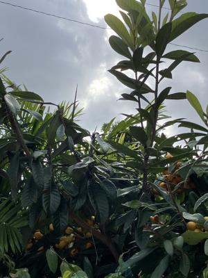
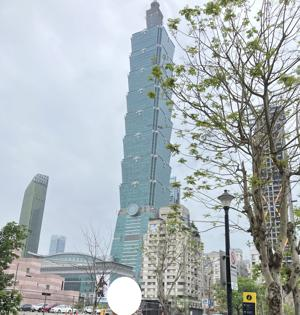
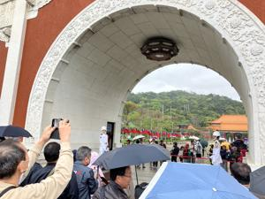
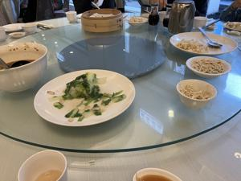
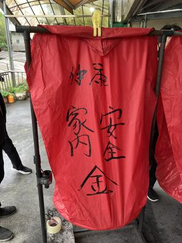
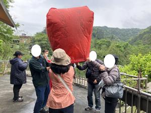
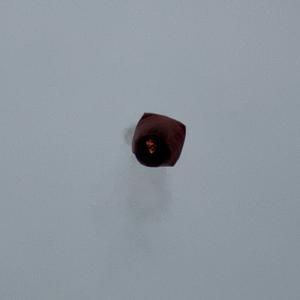
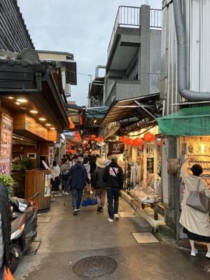
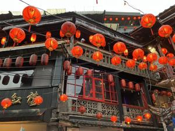

うるがいの話 ある日
最新: 観光２日目【うるがいの話 ある日】とは 一日だけのプログです
『うるがいの話』の最新一日だけのプログで、通信料が少なく経済的だ。カニの画像をクリックすると全ての日付が載る『うるがいの話』サイトを表示します
|
|
【うるがいの話】 うるがい(ｳﾙｶﾞｲ urugai)とは、『もずくがに』の名前でとても大きくなります。 |
|---|---|
|
|
【カミマヤーの話】 猫のことを方言でマヤーといいます。カミマヤー（kamimayaa）とは、神の猫のことです。 |
|
【たながぁの音楽】 たながぁ（ﾀﾅｶﾞｰ tanagaa）とは手長えびのことで、何種類かあり大きいのは車 エビぐらいになります。 |

|
【ぶながぁの話】 ぶながぁ(ﾌﾞﾅｶﾞｰ bunagaa)とは、赤い髪の毛、赤い身体、そして身長は１ｍ２０ｃｍ ぐらい、川の蟹を食べているの目撃された。場所は沖縄県国頭郡大宜味村のと ある村僕の隣近所に住んでいる爺さんから、聞いた話です。 |
|
|
【ギーマの話】 ギーマ(giima)とは、山原の里山に咲くスズランに似た、 花を付けます。実は食べられます、 気が付くと口の周りが紫になっています。 |
2025年04月09日 (水）観光２日目
15:39

ホテルの朝食は６時半からだけど、５分前に待つ。先客のキャリー
ケースを置いた二人の女性の一人が、私にペラペラ何やら喋る。ジ
ャパニーズと話すと、『失礼いたしました』と日本語で答えた。キ
ャリーケースを持っているので、これからチョックアウトですか？
（英語で）尋ねると、私達は東京に住んでいて台湾に帰ってきたと
か・・・・。６時半になると、受付の人へ台湾の言葉で何やらペラ
ペラ（この人たちは、日本人ですよ）喋ると、受付の人は『どうぞ
』と日本語で、席まで案内してくれた。謝謝（ありがとう）とお礼
を言った。
10:20 台北101 小雨がぱらついていた

11:07 忠烈祠 衛兵交代を見学

門に立っている衛兵、マジに動かない。添乗員后さんからいろいろ
聞く。給料は２倍ほど、昔は、６秒に一回の瞬きの訓練をしたらし
い。
12:58 昼食 小籠包など 私のグループ（８名）は、かなり残す
小籠包美味かった、が、食べる気力は無くなっていた。

14:34 十分 ランタン（天燈）

バスに揺られてとんでもない人混みのなか、添乗員に誘導されラン
タン（天燈）をあげにいく。このころから、バス酔いと食べ過ぎに
苦しむ。一つのランタンに４名、書く場所も四か所、私が書いたの
は健康、後はヨメが書く。書くことがない、最後はえげつないが、
金（マンションがうれますように）を書き入れる。
ランタン（天燈）中には、すでに火が燃やされて浮き上がった状態

ランタン（天燈）中は、煙を出しながら空へ

17:10 九分 海が見える展望台の近くで集合

このあと、添乗員后さんにトイレ！と言い、近くまで案内してもら
う。このあと、トイレでもどす.
提灯がきれいである。

そのあと、近くで皆は夕食をとるが、私は当然手をつけず。このあ
と、十分専用のバスに乗るのだが、人が多くてバスに乗れない。４
台ほど見送ったあと（３０分間ほど）、夜の雨のなか席に座れず立
ったま（全員）観光バスの駐車場まで、くねくねした急坂を走行（
２０分ほど）。着いたときは、ほぼ、グロッキー状態。
でもね、まだ、ホテルまで１時間もバスで移動しなければいけない
覚悟した、バスの中でもどす、幸い一番後部座席の左端が私の席、
のるなりビニール袋を口に抑えたまま。ヨメが、あと十分ほどで着
く筈と言われたが、全然着かなない、ナハマラソンのゴールの後、
少しでゴールだよと同じ。変に励まさないで欲しかった。２１時半
ごろ、ホテルに到着。空きっ腹で、私は２２時には寝た。起きたら
１時、お腹が空いたのでヨメが、沖縄から持っているきた非常食を
食べる。